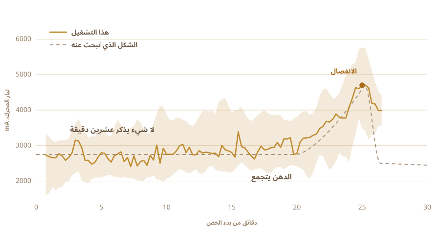

01
أكلته ولم أصنعه
السمن الذي أعرفه كان يأتي من القرى. في برطمانات مستعملة، من أناس يصنعونه بالطريقة نفسها منذ زمن طويل، حتى إن أحدا هناك لا يرى فيه صنعة.
طعمه لا يشبه ما يُباع في العلب.
ولم أصنع منه دفعة واحدة في حياتي. لم أكن أعرف كم من الوقت أترك الحليب، ولا كم يجب أن يكون الرائب باردا، ولا ما الصوت الذي يصدره القدر حين ينتهي.
02
يبدأ من الرائب، لا من القشدة مباشرة
أكثر السمن الصناعي يبدأ من القشدة. والطريقة القديمة تبدأ قبل ذلك بيوم أو بيومين، من قشدة (وهي في الحقيقة حليب كامل الدسم غُلي حتى ثخن) تُحول إلى رائب ويُترك ليلة كاملة ليحمض.
والتحميض هو الخطوة الحاسمة، لأنك إن تجاوزتها حصلت على زبدة مصفاة. طيبة، لكنها ليست سمنا.

03
يومان خارج الثلاجة
حليب فاتر، وملعقة من رائب الأمس تُقلب فيه، ثم تتركه الليل كله والبكتيريا تتولى الأمر. أنا تركت حليبي خارج الثلاجة يومين.
هذا هو التخمر، وهو الخطوة التي يتجاوزها السمن الصناعي. البكتيريا الحية، وأكثرها العصيات اللبنية، تشتغل على اللاكتوز وتحوله إلى حمض اللاكتيك. الحليب يثخن. يحمض. وفي الصباح يكون صار شيئا آخر.
من هنا يأتي كل ما هو جيد فيه. اللاكتوز يتفكك، فيصير أهون على المعدة. الدهون والبروتينات تصبح أسهل على الجسم امتصاصا. وهناك حمض الزبدة، وهو الحمض الدهني قصير السلسلة الذي تعتمد عليه فعلا بطانة الأمعاء، وهو في سمن مصنوع هكذا أكثر منه في سمن خُفق من قشدة حلوة.
الأيورفيدا توصي بهذه النسخة بعينها منذ زمن طويل.
ما أستطيع أن أقوله أنا هو أن الرائحة تأتي من التخمير. وتلك الرائحة هي معظم السبب في أن يشغل أحد نفسه بشيء من هذا.

04
للطريقة اسم
بيلونا. رائب في قدر، وممخضة خشبية تُنزل فيه، ثم تحركها جيئة وذهابا حتى تستسلم الزبدة وتطلع.
الممخضة صنعتها بنفسي. ما وجدته على الإنترنت كان ملصوقا، ولم يكن أحد ليقول لي ما نوع اللاصق. ذلك الشيء يقعد في طعامك نصف ساعة، فلم أكن سأخمن. خشب صلب، وبراغي من الفولاذ المقاوم للصدأ، ومربوطة على عمود خلاط كان عندي في الدرج.
أربعة أذرع، وطوق فولاذي يحفظها متعامدة. كلها براغي، فهي تُفك مرة أخرى.


تأخذ نحو نصف ساعة، ولا يحدث فيها شيء مثير في معظم الوقت. وهذا بالضبط نوع العمل الذي تسرح وأنت تفكر في تسليمه لشيء آخر.

05
فسألت
الناس الذين يعرفون هذا العمل فعلا لا يشتغلون بوصفات، ولم يكن أحد منهم في مطبخي. فذهبت الأسئلة إلى نافذة محادثة بدلا من ذلك.
كم يُترك ليروب. كم يبقى الرائب باردا. ما أقصى سرعة قبل أن يسخن الاحتكاك القدر ويفسد الزبدة. كل جواب كان يفتح ثلاثة أسئلة أخرى.
ثم سألت السؤال الذي كنت أعنيه فعلا. هل يمكن أن تصنعه أنت؟
لم يبق السؤال «كيف أصنع السمن». صار «هل تصنعه لي أنت».
06
الوحش
مثقاب لاسلكي. والممخضة من درج ومن متجر أدوات. وعلبة طعام بلاستيكية للإلكترونيات، ولوح تقطيع ليكون العمود الفقري، وزر إيقاف أصفر كبير، لأن كل شيء فيه محرك يجب أن يكون فيه واحد.
كلفته لا شيء تقريبا، وشكله يقول ذلك. وهذا هو المقصود تقريبا.

- المحركمثقاب لاسلكي، ممسوك بملزمة
- الممخضةخشب صلب وفولاذ مقاوم للصدأ، مصنوعة لا مشتراة
- الدماغراسبيري باي، يسجل مرة كل ثانية
- الحاسةتيار المحرك عند الخض، ومجس حرارة عند الطبخ
- الإيقافزر كبير واحد، موصول ليقطع الكهرباء
07
الخض هو الجزء السهل
خض الرائب يقدر عليه أي أحد. الصعب هو معرفة متى تتوقف.
إن توقفت مبكرا صار عندك رغوة ثخينة. وإن طولت ردت الزبدة إلى المخيض وضاعت. والنافذة تتحرك حسب الدهن، وحسب الحرارة، وحسب كيف يمضي النهار.
لا أحد يقيس هذا بالوقت. تسمعه. تتحول الخضخضة في الداخل من دوران ناعم إلى صفعات غير منتظمة، وهناك تمد يدك.

08
حاسة واحدة، لا غير
فأعطيتها حاسة واحدة. تراقب كم يشد المحرك.
عشرين دقيقة لا شيء. يستقر الحمل حول 2700 mA ويتذبذب قليلا. ثم يبدأ الدهن بالتجمع ويصبح على المثقاب أن يدفع في شيء أثخن. يصعد إلى 4700 ويثبت هناك لحظة، ثم تترك الزبدة السائل فيهبط الحمل.
لا كاميرا، ولا نموذج، ولا أي ذكاء. رقم يصعد ثم يهبط.

09
توقفت من نفسها
عملت. ذهبت أفعل شيئا آخر، ولما رجعت كانت قد أطفأت نفسها.
كتل زبدة صفراء باهتة في مخيض عكر. لم يخبرها أحد بالوقت. استنتجته من الشيء الوحيد الذي تستطيع أن تحس به.

10
ثم تعود الأيدي
تجمع الكتل وتضغطها كرة واحدة. تغسلها بماء بارد، مرة بعد مرة، حتى يتوقف الماء عن الخروج عكرا.
كل قطرة مخيض تتركها فيها ستحترق في الخطوة التالية. هذا الجزء لم أسلمه للآلة، ولم أكن أريد.


11
الحاسة الثانية
حمل المحرك قال للآلة متى تتوقف. والطبخ مسألة أخرى، لأنك هنا لا تبحث عن لحظة، بل تحاول أن تثبت واحدة.
فيذهب القدر إلى موقد كهربائي ومعه مجس حرارة، ومنظم للتيار المتردد يشغل الموقد ويطفئه ليحفظ الرقم حيث وضعته. ضبطته على 250 F، أي نحو 121 درجة مئوية، وبقي هناك نحو ساعة.
من يراقب قدرا ساعة كاملة سيسرح. المنظم لا يمل.

12
ساعة من مراقبة اللون
الزبدة في القدر، وبعد ذلك يمضي الأمر وحده في معظمه.
تذوب. ترتفع رغوة بيضاء بصوت عال. يتبخر الماء ويخفت الصوت. جوامد الحليب تنزل وتصير بنية اللون، والرائحة تنتقل من زبدة إلى شيء محمص. وحين يسكت القدر ويصفو السائل، يكون قد انتهى.
راقبت معظمه على أي حال، لأنه شيء جميل أن يُراقب. لكن النتيجة لم تتغير بشيء مما فعلته.


13
السمن
صاف، كهرماني، ورائحته رائحة البرطمانات التي أكلت منها وأنا صغير. كان هذا كل الاختبار الذي أملكه، وقد نجح فيه.

نزل في البرطمانات ساخنا وصافيا. وفي اليوم التالي كان قد جمد باهت اللون ومحببا.
ثم لصقت عليها ملصقا. الكلمة المكتوبة عليه هي السمن بالنيبالية، والرمز الذي بجانبها يرجعك إلى هذه الصفحة.

أول دفعة أصنعها في حياتي. وأنا لم أصنعها فعلا.
14
تسعة برطمانات في المرة الثانية
التشغيل الأول أعطى برطمانين، وكان هذا كل شيء. وهذه المرة امتلأ الدرابزين.
تسعة برطمانات. اثنان طويلان بغطاء لولبي أقرب إلى الكاميرا، وستة بغطاء مشبكي في الوسط، وواحد صغير في الطرف البعيد عند العمود.

الملصق صار مختلفا. البرطمانان الأولان كانا يحملان ملصقا ورقيا ورديا، وفي أعلاه OUR STORY مطبوعة. وهذه من فيلم شفاف، فيظهر السمن من وراء الحروف، والرمز الذي بجانبه ما زال يرجعك إلى هذه الصفحة.


جمد بالأصفر الباهت نفسه الذي جمد به في المرة الأولى، وهو ما لم أكن متأكدا منه.
15
ما أريده بعد ذلك
الآلة الآن تعرف شيئين. متى تتوقف عن الخض، وأي حرارة تثبت.
بعد ذلك أريد أن أعطيها عينين وأذنين. كاميرا، لترى الرغوة تهبط والجوامد تصير بنية اللون، فتختار الحرارة بنفسها بدلا من أن تثبت رقما أعطيتها إياه. وميكروفون، لأن كثيرا مما يخبرك أن السمن جاهز هو أن القدر يسكت.
والمثقاب يستطيع أن يأخذ دورا ثانيا. فالزبدة بعد أن تصل القدر تحتاج تحريكا، وهناك محرك قاعد لا يفعل شيئا.
ثم الحلقة. غيّر زمن التخمير، غيّر السرعة، ذق ما يخرج، احفظ ما نجح، وأعد. ثلاثون تشغيلا وتصل إلى مكان لم يكن ليخطر لي أن أبحث فيه.
وأنا لم أكن أعرف أين أبحث على أي حال.
من أي شيء صُنعت، وأين يحدث الاستشعار، وما الذي تراقبه فعلا.